- Issue
- #49 · M4-04 error detail
- PR
- #120
- Validation base
- 13333e7
- Evidence patch
- final smoke report on 13333e7
- CI
- GitHub Actions validates the evidence commit after push
- Runtime
- FastAPI + Vite + Google Chrome
- Database
- 临时 SQLite fixture
- Evidence
- CDP 集成断言 + 最终代码上的原生 Computer Use 截图
- Native capture
- 08/09 已按最终两行卡片和无诊断画布重采
Harness Evolution · PR #120 · validation on 13333e7
M4-04 错误详情与归因集成冒烟报告
在临时 SQLite、真实 FastAPI/Vite 与 Google Chrome 上完成错误详情工作台集成验证。冒烟发现并修复跨 Session 409 重复英文 toast、错误卡缺少归因报告深链以及画布泄漏裸布局诊断三项缺陷；最终提交同时移除原型没有的“问题 ID”标签，并把归因结论改成 14px 结论值与状态 chip。15 个 CDP 场景与 2 个原生 Computer Use 场景全部通过，原型结构、双向联动、深链恢复、加载/错误/重试、归属校验、响应式布局及控制台清洁度均有证据。
17冒烟场景
17通过
3缺陷已修复
0非预期运行时错误
待本次 pushCI
Environment and Artifact
2026-10-26/27 · macOS · Google Chrome · FastAPI + Vite + SQLiteScenario Matrix
16 pass · 1 fixed| # | 场景 | 结果 | 观测 | 证据 |
|---|---|---|---|---|
| 01 | 五种问题状态 | PASS | 真实 fixture 返回未分析、非问题、模型、prompt、错误五态。 | API displayState 集合断言 |
| 02 | 1408px 原型布局 | PASS | 340px 左栏与完整执行流同屏；compact 错误卡按原型显示两行和归因报告深链；正式画布无裸诊断 code，且无横向溢出。 | screenshots/10-before-card-and-diagnostics.png screenshots/01-errors-all-1408.png |
| 03 | 选中问题过滤执行流 | PASS | 问题卡与画布共享 case 状态；选中后只剩该问题卡，reason 仅显示一次。 | screenshots/02-selected-description.png |
| 04 | 描述深链刷新恢复 | PASS | 刷新后 case、desc 页签与过滤执行流均恢复。 | CDP Page.reload + URL/ARIA 断言 |
| 05 | 归因顺序与安全深链 | PASS | 结论值 14px 并带问题状态 chip；分类和根因对象只出现一次；来源问题安全新窗口回 desc；Markdown 可见。 | screenshots/03-attribution.png |
| 06 | 归因深链刷新恢复 | PASS | 刷新后 tab=attr 与当前 case 保持一致，归因页签仍为选中态。 | CDP Page.reload + aria-selected 断言 |
| 07 | 全部错误恢复全图 | PASS | 清除 case/tab 后画布恢复全部问题卡，详情区回到未选择空态。 | URL query 为空 + 问题卡数量断言 |
| 08 | 画布 → 列表双向选择 | PASS | 点击执行流问题卡后 URL 与左栏选中态同步；列表选择方向也已验证。 | 画布问题卡点击 + aria-pressed 断言 |
| 09 | 全局空态 | PASS | 无 Session 的错误入口显示“请选择会话”，不伪造问题数据。 | screenshots/04-global-empty.png |
| 10 | 加载态 | PASS | 暂停真实 tree 请求时，执行流面板显示可访问的加载骨架。 | CDP Fetch.requestPaused + role=status 断言 |
| 11 | 错误态 | PASS | 执行流请求失败时显示局部错误与“重试”，其他工作区仍可操作。 | screenshots/05-tree-error.png |
| 12 | 重试恢复 | PASS | 点击错误态“重试”后真实执行流恢复，无需刷新整页。 | retry 点击 + AgentTree 恢复断言 |
| 13 | 跨 Session 409 | FAIL → FIXED | 修复前同时出现两条后端英文 toast；修复后只显示页级中文不可重试错误，不渲染侧栏、执行流、详情或重复全局提示。 | screenshots/06-cross-session-409-before.png screenshots/06-cross-session-409.png |
| 14 | 390px 响应式布局 | PASS | 单列工作台无横向溢出，详情与归因仍可访问。 | screenshots/07-mobile-390.png |
| 15 | Console / network | PASS | 除刻意验证的 409 与 tree 中断外，无 warning、error 或未捕获异常。 | console-summary.txt |
| 16 | 原生 Computer Use · 归因分析 | PASS | 原生 Chrome 完成登录、首次改密和 URL 导航；归因页签、执行流、结论及来源链接均可读。 | screenshots/08-native-computer-use-attribution.jpeg |
| 17 | 原生 Computer Use · 页签切换 | PASS | 原生点击“问题描述”后 URL 与原页面选中态同步，8 位问题 ID、归因报告链接和对象信息可见。 | screenshots/09-native-computer-use-description.jpeg |
Issues and Observations
P2 跨 Session 409 重复弹出英文全局 toastP2 compact 错误卡缺少原型第二行的归因报告 ID
P2 执行流向用户泄漏裸布局诊断 code
跨 Session 409 重复弹出英文全局 toast
- Actual
- 页面正文已显示 BAD_CASE_SESSION_MISMATCH，同时 detail 与 analysis 两个查询各触发一条英文 toast，并在移动端短暂残留。
- Expected
- 页面级阻塞错误独占展示该冲突，不重复弹全局提示；其他非页面处理的 409 仍保留 toast。
- Root cause
- main.ts 的全局 presentConflict 对两个并发 409 查询无差别提示，未区分页面已处理的冲突码。
已修复 · TDD + 真实 Chrome 复测
compact 错误卡缺少原型第二行的归因报告 ID
- Actual
- 状态 chip 与原因挤在首行，底行只剩对象，已分析问题的 probeId 完全缺失。
- Expected
- 首行显示序号、问题 ID 和原因；底行显示状态、对象与真实 probe 前八位深链。
- Root cause
- 错误详情复用的 BadCaseList compact 分支没有输出 analysis.probeId，也没有按原型拆分两行。
已修复 · TDD + 真实 Chrome 复测
执行流向用户泄漏裸布局诊断 code
- Actual
- 缺少父触发点的数据会在画布左上角显示橙色 MISSING_PARENT_EVENT。
- Expected
- 诊断仍用于稳定降级和测试，但正式界面只显示合成后的执行流。
- Root cause
- AgentTree 直接把 graph.diagnostics 的机器 code 渲染成用户可见覆盖层。
已修复 · TDD + 真实 Chrome 复测
Evidence
11 screenshots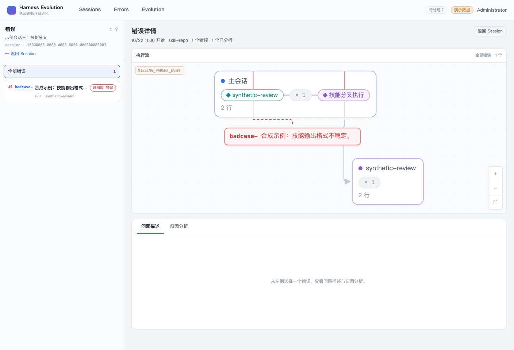
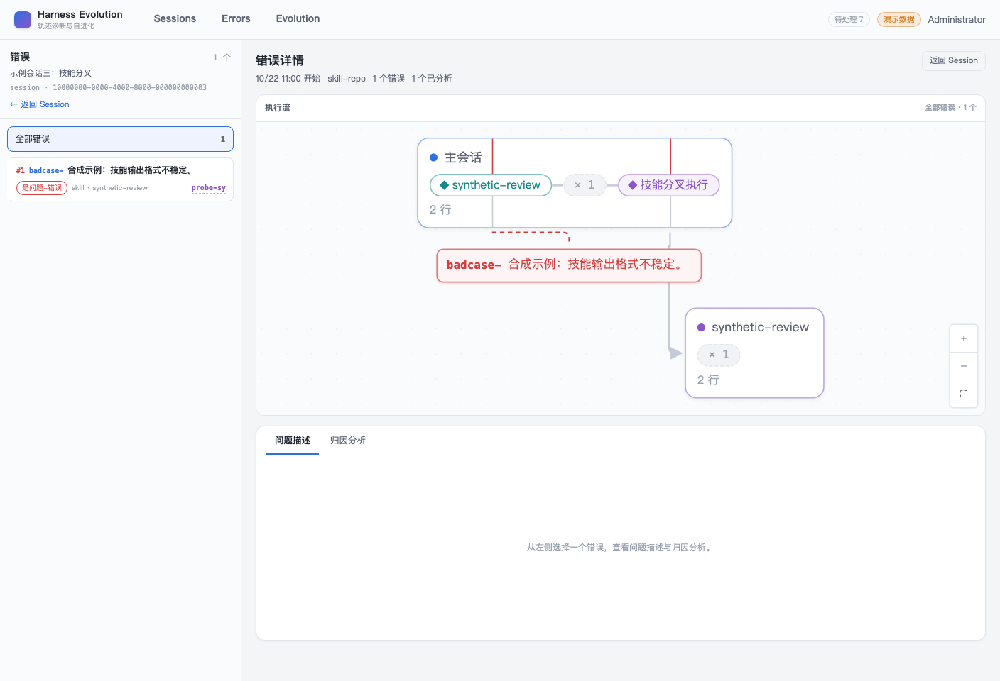
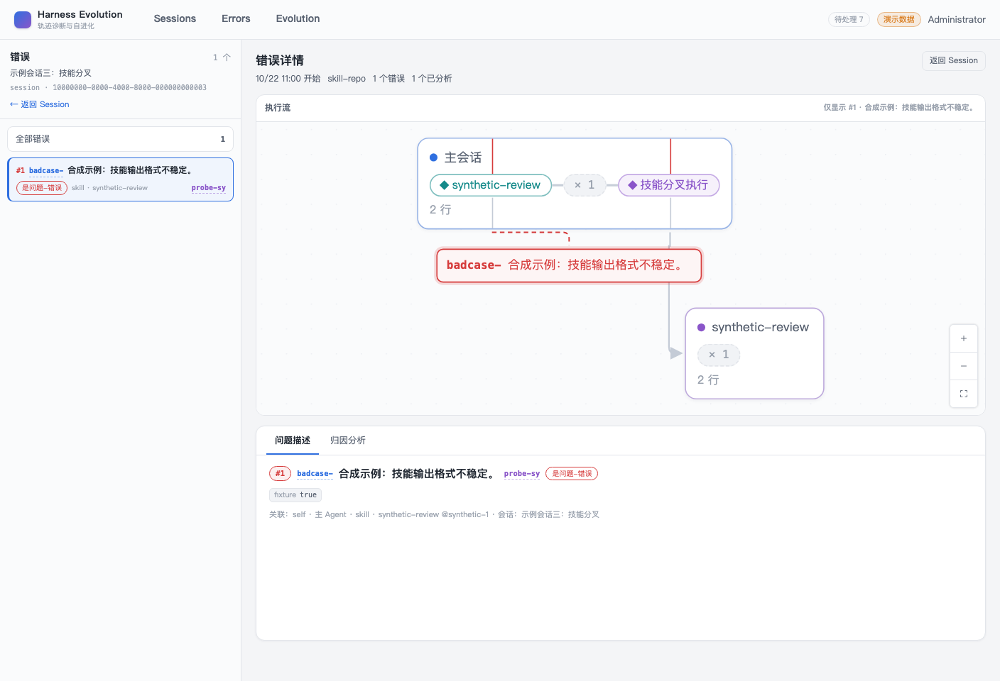
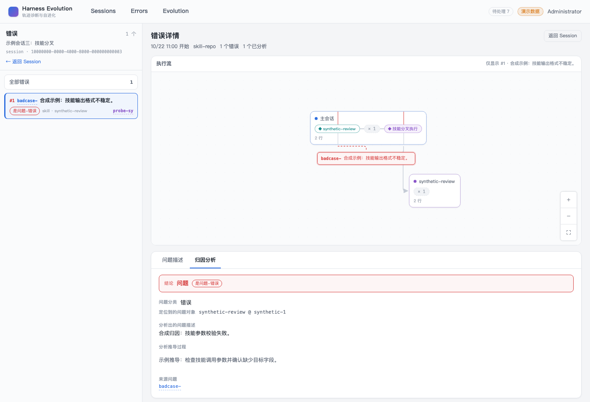
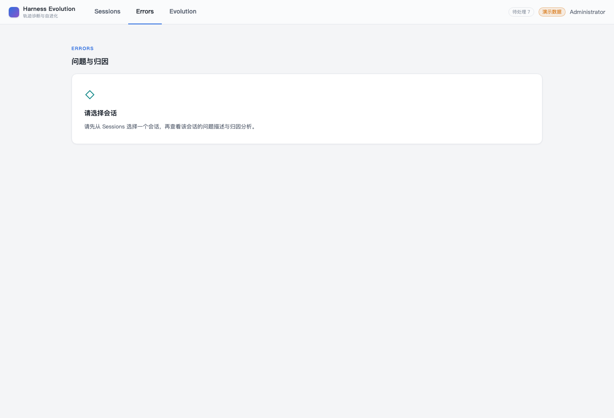
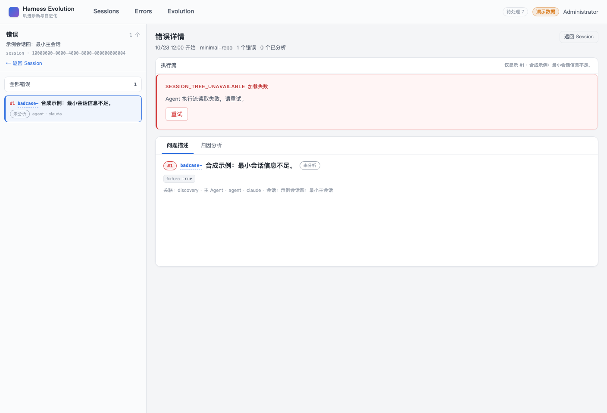
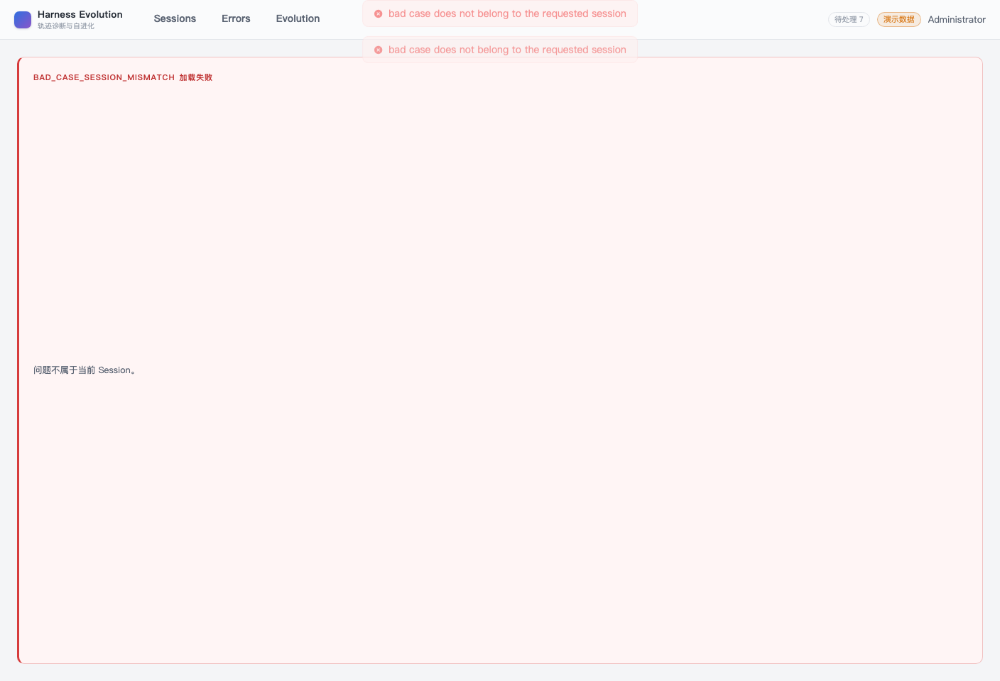
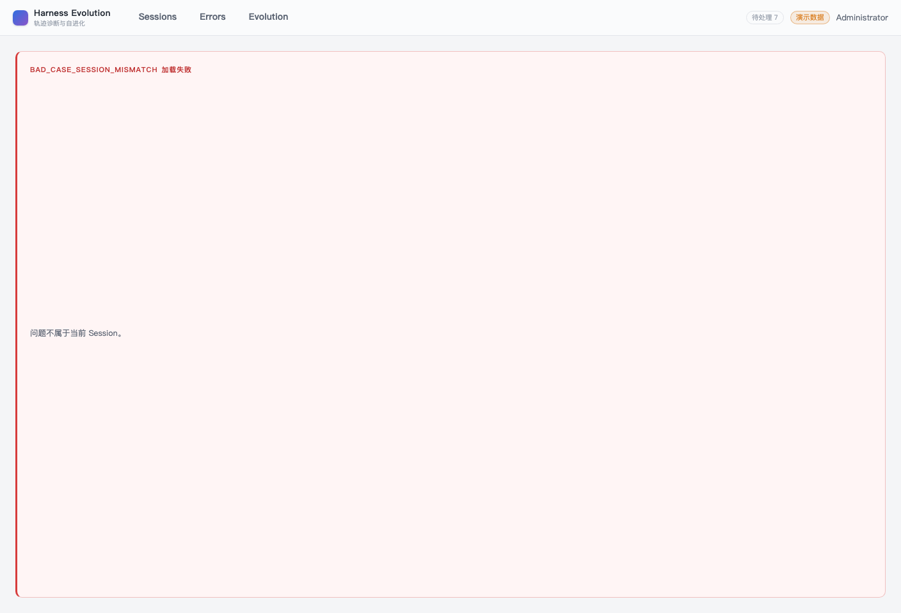
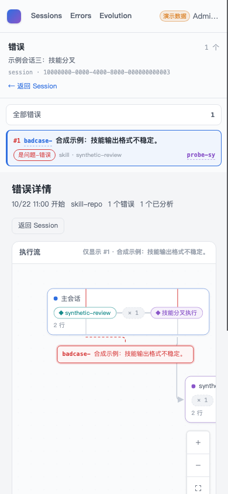
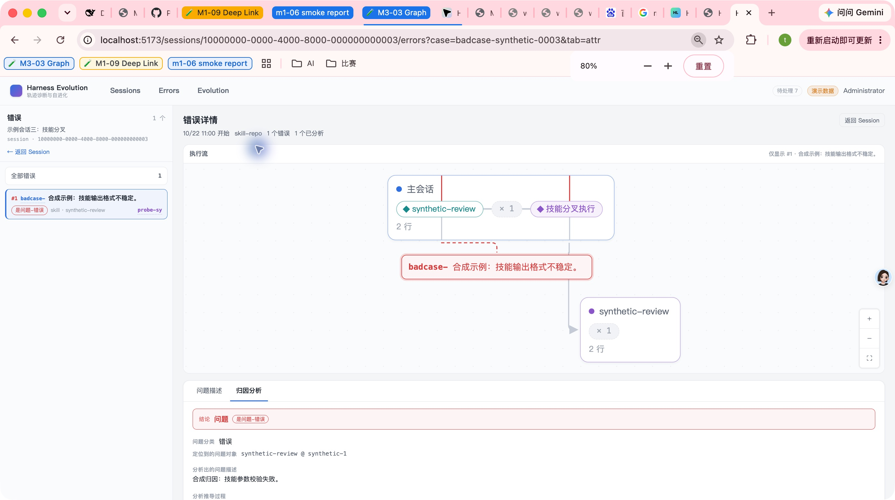
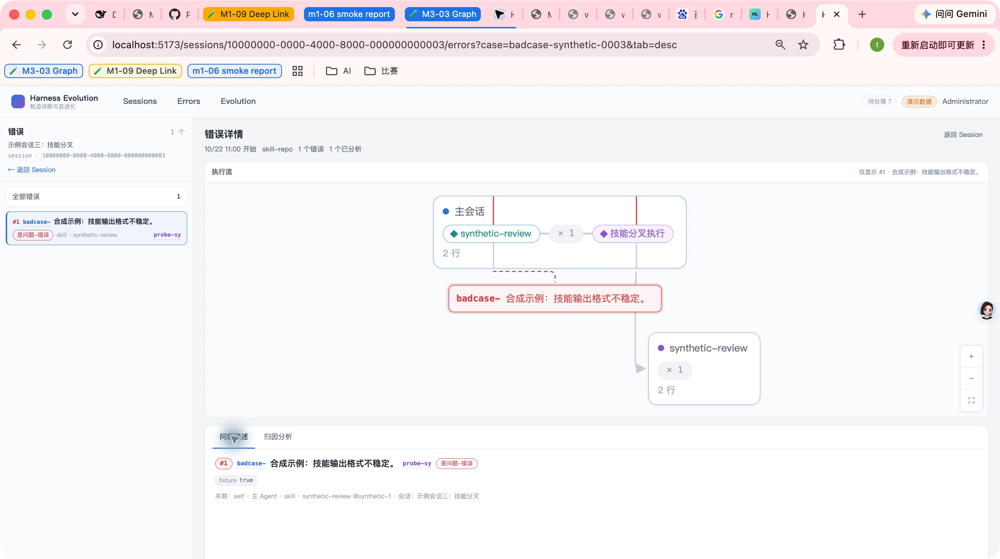
Automated Coverage Assessment
4 areas reviewed| 区域 | 覆盖 | 结论 | 建议 |
|---|---|---|---|
| 错误详情主链路 | CDP + 原生 Computer Use | 五态、列表/画布联动、全部错误恢复、双页签刷新与归属校验均通过。 | 后续改动继续保留真实 API + 浏览器双层验证。 |
| 异步状态 | 真实 Chrome Fetch 故障注入 | 加载、执行流失败和局部重试均被条件断言锁定。 | CI 中继续使用真实请求而非组件桩验证关键三态。 |
| 原型与无障碍 | 原生 CUA + CDP 计算样式/ARIA | 亮色布局、340px 左栏、两行错误卡、问题/报告 ID 深链、14px 结论与状态 chip、页签关系及可访问名称符合原型；布局诊断不进入用户界面。 | 设计 token 或页签语义变化时复跑 smoke。 |
| 回归门禁 | Vitest + 真实 Chrome E2E + CDP 复测 | 单元测试锁定页面处理型 409 不弹 toast、compact 报告深链、诊断不外显、无“问题 ID”标签和归因 banner 原型样式；真实 Chrome E2E 与 15/15 CDP 冒烟复测通过。 | 以 PR #120 最终 head 的 CI 为准，合并前保持 CI 全绿。 |
Conclusion
冒烟通过冒烟发现的重复 toast、错误卡报告 ID 缺失与裸诊断泄漏均已修复并复测，最终 17 个场景全部通过。
- 错误详情的关键结构、状态与交互和原型一致。
- 页面已处理的 BAD_CASE_SESSION_MISMATCH 不再重复弹全局 toast，其他 409 提示边界保持不变。
- 两行错误卡和真实 probe 深链与原型一致，布局诊断不再进入用户界面。
- 深链刷新、跨 Session 409、加载/错误/重试路径均被验证。
- 原生 Computer Use 与 CDP 证据相互补充。
- 除预期故障注入外，控制台与网络无异常。
证据源：原生 Computer Use、Chrome DevTools Protocol、真实 FastAPI/Vite/SQLite 与自动化测试。HTML 由 JSON 渲染生成。